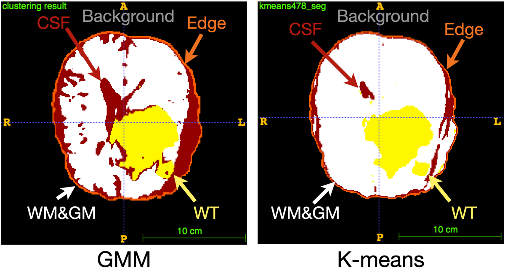
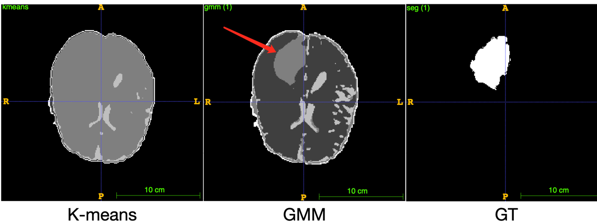
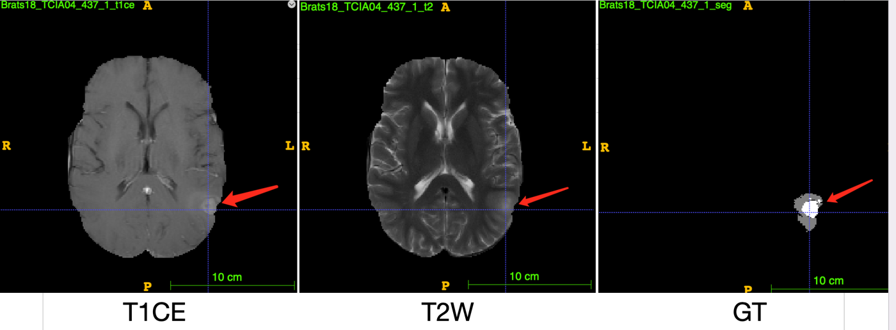

医学影像 · 无监督学习
没有标注，也要找到肿瘤
在 BraTS 2018 上只用聚类完成脑肿瘤分割：一是 k-means（K 均值聚类），二是 GMM（高斯混合模型）， 后者由一个在 PyTorch 中从零手写的 EM（期望最大化）算法拟合，在 GPU 上一次处理九百万个体素。 十位患者中有六位，两种方法的 Dice 系数（Dice score）都达到 0.9 左右；另外四位则精确地暴露了 无监督方法在哪里失效——其中一种失效，还需要人工介入才能勉强补上。
K-means 与 EM 并排对比
合成的组织群体，大小和形状差异悬殊——这正是体素强度数据的真实处境。相同的点，相同的 K， GMM 从 k-means 质心初始化，与项目中的做法完全一致。带圆环的点是真实肿瘤。
实线椭圆 1σ 虚线 2σ 大圆环 k-means 质心 带圆环的点 真实肿瘤 Dice 取与真实肿瘤匹配最好的那一个簇计算
k-means 只会画等大的圆，所以它把细长的白质群体一分为二，并把肿瘤糊进离它最近的簇。GMM 为每个群体 拟合一个椭圆，通常直接胜出。现在把肿瘤大小拖到十来个体素：两者一起崩溃——这就是患者 7。再把 K 调到 5， 小簇回来了，随之而来的却是另一个问题：五个簇里哪一个才是肿瘤？这就是流程中的那一步人工操作。
为什么选择无监督
BraTS 2018 提供 285 位患者的数据，每位患者有四种 MRI 模态——T1、增强 T1、T2 和 FLAIR——体积为 240×240×155 个体素，肿瘤区域由神经放射科医生勾画。有监督的路线早已被走通。这里的问题不同：在完全 没有标注的情况下，经典聚类方法能走多远，又究竟止步于何处？
这样的设定是有意为之。人工标注是所有医学影像流程中最昂贵的环节。一种完全不需要标注的方法，即便 输给需要标注的方法，也值得弄清楚——尤其是当你能准确知道它会漏掉哪些肿瘤的时候。
处理流程
从体素到特征向量
每种模态先做 z-score 标准化到零均值、单位方差，避免不同扫描仪之间的对比度差异占据主导。随后每个体素 被替换为其 3×3×3 邻域的均值——一次轻度的三维平滑，用来压制那些会把簇打碎的噪声。结果是每个体素对应 一个 4 维向量 (μT1, μT1c, μT2, μFLAIR)，每位患者有 890 万个这样的向量。
以 K = 5 聚类
假设存在五个群体：背景、白质与灰质（合为一类）、脑脊液（CSF）、脑边缘，以及整体肿瘤。k-means 直接用 scikit-learn 的实现；GMM 则不是——它是在 PyTorch 中手写的 EM，每个分量带完整的 4×4 协方差， E 步用 log-sum-exp 保证数值稳定，用 Cholesky 分解计算对数行列式，并加了一道保护：一旦对数似然下降 就回退参数。它必须在 GPU 上运行，因为每位患者九百万个点，别的方案都不现实；它还用 k-means 质心作为 初始值，让 EM 从一个合理的最优点附近出发，而不是从随机点出发。

从五个簇中挑出肿瘤
聚类给出的是标签，不是名字。五个簇中有三个按规则指派：角落体素的众数所在的簇是背景；剩余最大的簇是 白质与灰质；最小的簇是脑边缘。这就只剩下两个——CSF 和肿瘤——而它们无法通过数量或概率区分开来。
没有自动化的那一步。CSF 和肿瘤是靠人眼看出来的。论文对此直言不讳，这也是该方法 诚实的边界：整条流程直到最后的二元决策之前都是无监督的，而在那一步需要一个人。这也正是上面的 演示在 K 调到 5 时所展示的同一个问题。
十位患者，三项指标
随机抽取十例高级别胶质瘤病例，各自独立聚类。真实标注仅用于对结果打分。
| 患者 | k-means | GMM-EM | ||||
|---|---|---|---|---|---|---|
| Dice | 灵敏度 | 精确率 | Dice | 灵敏度 | 精确率 | |
| 1 | 0.886 | 0.877 | 0.894 | 0.889 | 0.865 | 0.915 |
| 2 | 0.887 | 0.933 | 0.845 | 0.892 | 0.944 | 0.846 |
| 3 | 0.452 | 0.896 | 0.302 | 0.447 | 0.869 | 0.301 |
| 4 | 0.886 | 0.896 | 0.878 | 0.841 | 0.929 | 0.767 |
| 5 | 0.901 | 0.840 | 0.971 | 0.915 | 0.848 | 0.994 |
| 6 | 0.904 | 0.903 | 0.906 | 0.891 | 0.946 | 0.815 |
| 7 | 0.004 | 1.000 | 0.002 | 0.009 | 1.000 | 0.004 |
| 8 | 0.003 | 0.003 | 0.004 | 0.348 | 0.661 | 0.236 |
| 9 | 0.871 | 0.782 | 0.982 | 0.929 | 0.918 | 0.940 |
| 10 | 0.388 | 0.943 | 0.244 | 0.485 | 0.977 | 0.322 |
六位患者——1、2、4、5、6、9——用两种方法都能分割得很好，GMM 在大多数病例上领先，最好的一例 Dice 达到 0.929。另外四位才是有意思的部分，它们以三种截然不同的方式失效。
患者 3 和 10 的灵敏度高于 0.87，精确率却只有 0.3 左右：肿瘤是找到了，但大量非肿瘤 组织也一起被带了进来。这是过度分割，论文提出的提高 K 的方案可以直接应对这一问题。
患者 8 是两种方法分道扬镳之处。k-means 得分 0.003——什么都没找到。GMM 得分 0.348， 虽然不高，但在 k-means 一片空白的地方，它把肿瘤的轮廓勾了出来。

患者 7 让两种方法都败下阵来，而原因在任何聚类运行之前就已经看得见：肿瘤太小了。 只有五个簇时，没有第五个群体留给它占据，它被吸收进了周围的任何组织。灵敏度 1.0、精确率 0.002 已经说明了一切——所谓的"肿瘤"簇几乎覆盖了一切，所以从技术上讲它确实包含了真正的肿瘤。

止步之处
论文以两点局限收尾，而且两者都是结构性的，而非偶然的。小肿瘤的失效源于把 K 固定在五：这么小的群体 争不到属于自己的分量。提高 K 会有帮助，上面的演示也证明了这一点——但每多一个簇，最后那一步 "判断哪个簇是肿瘤"就更难一分。而那一步本来就已经是人工完成的。
由此得出的结论反而更诚实：无监督聚类在大而对比度好的肿瘤上能走很远，而它需要人介入的那个点， 恰恰是人的判断最难被替代的那个点。论文为后续工作指出的方向——用降维在多位患者上联合拟合，以及基于 GAN 的无监督分割——都是在向这条边界发起攻击。
论文
五页，IEEE 格式，含 EM 推导。 在新标签页中打开 ↗
全部原始材料
BraTS 2018 受其自身数据使用条款约束，因此这里不再分发影像体数据本身。上方图片均转载自论文。
致谢与分工
两人合作的课程项目
于 2022 年 12 月与一位团队成员共同完成，工作由两人平均分担。曹一明为第二作者。
本页的 k-means / EM 演示由曹一明在项目之后单独构建，不属于原始提交的一部分。它使用的是 合成数据，而非 BraTS 体素。
数据与参考文献
- S. Bakas et al. Identifying the best machine learning algorithms for brain tumor segmentation, progression assessment, and overall survival prediction in the BraTS challenge. arXiv:1811.02629, 2018——BraTS 2018 数据集。
- J. Liu, L. Guo. An improved k-means algorithm for brain MRI image segmentation. ICMRA 2015——邻域均值特征。
- J. Qiao et al. Data on MRI brain lesion segmentation using k-means and Gaussian mixture model-expectation maximization. Data in Brief 27, 2019.